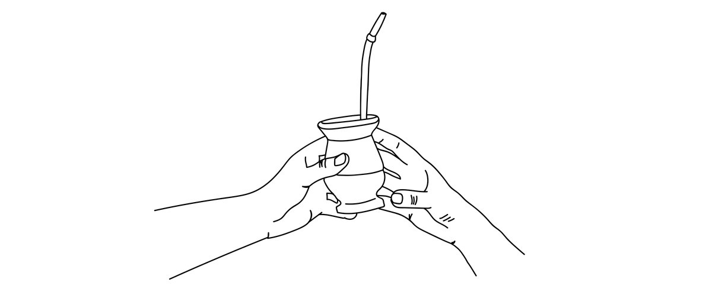

Como curar tu mate
Cura de mate calabaza:
- Chequear que el mate esté limpio y en condiciones. No mojar.
- Llenar toda su capacidad con yerba húmeda ya utilizada (de otra cebada).
- Colocar agua hirviendo.
- Dejar reposar por 12 horas.
- Retirar y despegar con cuchara el hollejo de la calabaza.
- Repetir el mismo proceso entre 3 y 4 veces.
- ¡Listo! A disfrutar de un rico mate.
Cura de mate de madera
- Chequear que tu mate esté limpio y en condiciones. No mojar.
- Untar el interior con un medio graso (aceite, manteca, etc.) y dejar reposar por 24 horas.
- Llenar toda su capacidad con yerba húmeda ya utilizada (de otra cebada).
- Colocar agua hirviendo.
- Dejar reposar entre 12 a 24 horas (el tiempo varía según la capacidad el mate. Si el mate es más grande, necesita más tiempo de reposo).
- Repetir el mismo proceso entre 2 y 3 veces más.
- ¡Listo! A disfrutar de un rico Cachamate